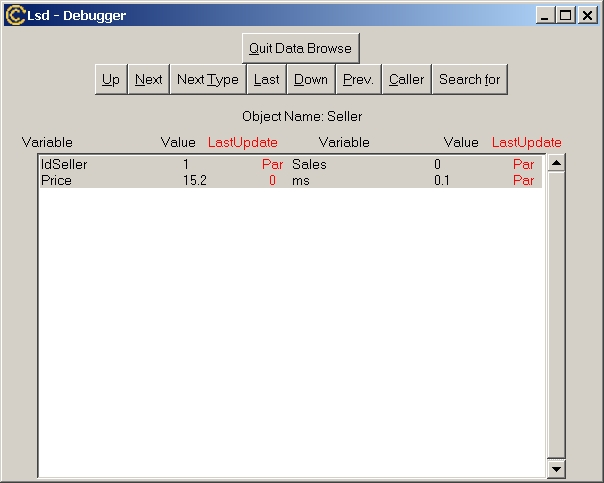

Menu "Data" - Data Browse
Since the main Lsd Browser shows the model by means of Object types it does not distinguish among individual instances of each Object. The windows to initialize the model (both initial values of variables and number of entities) are rather heavy, and are inconvenient to use be on huge models (with, say, more than few dozens of instances for some Object type). In some cases, modellers may be interested in observing each individual instance even in huge models. The Data Browser allows to explore the model by visiting each individual instance of Object in the model and edit individually the initial data there contained. Its main windows is as follows:

The window is derived from the window used for debugging purposes during a simulation run (without the functionalities to deal with the simulation run). See the manual on Lsd Debugger for information on the functionalities of the Data Browser.